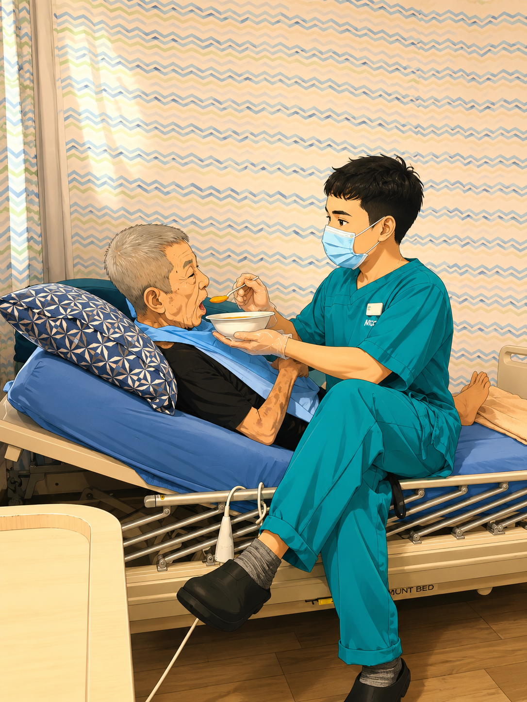
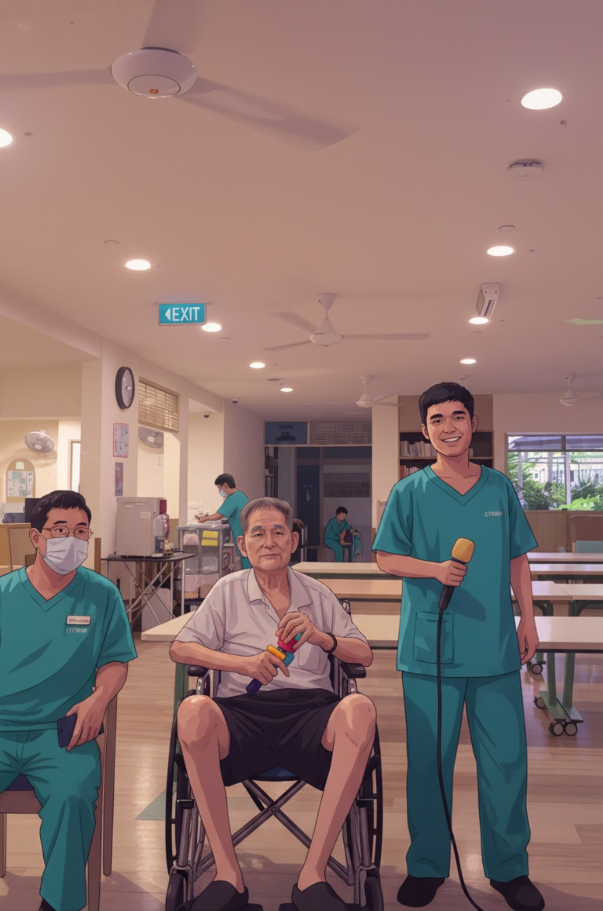

This website is a personal web development practice project.
I created it to improve my skills in HTML, CSS, and JavaScript.
My goal is to learn how websites are structured, designed, and made interactive.
I will continue adding new features and improving the website as I learn more about web development.
ကျွန်တော့ရဲ့ HTML, CSS နှင့် JavaScript skill
တွေကို လေ့ကျင့်စေနိုင်ရန် ဖန်တီးခဲ့တာဖြစ်ပါတယ်။ Website တစ်ခုရဲ့ တည်ဆောက်ပုံ၊ ဒီဇိုင်းပုံစံနဲ့
အပြန်အလှန်ဆက်သွယ်နိုင်မှုတွေကို လေ့လာရန် ရည်ရွယ်ထားခြင်းလည်း ဖြစ်ပါတယ်။ ၎င်းနှင့်စပ်လျဉ်း၍ လေ့လာသင်ယူမှုများကို
ဆက်လက်လုပ်ဆောင်ပြီး Feature အသစ်များထည့်သွင်းကာ တိုးမြှင့်ဆောင်ရွက်သွားမှာ ဖြစ်ပါတယ်။Click here to read in Burmese
On the day of September 4th, 2026, I modified my website by adding new features
and presented it to Burmese.
The above paragraph has been styled to have an
indent and justified alignment .
The website update section at the
end of the page had been styled with padding and a border for emphasis.
And the Statement of thanks has been
centered and italicized.
I rebuilt the website entirely with HTML and CSS without using any JavaScript.
ယနေ့ 'အောက်တိုဘာ ၄'မှာ ကျွန့်တော်ရဲ့ Website ကို Feature
အသစ်များဖြည့်စွက်၍မြန်မာဘာသာဖြင့် ဖတ်ရှု့နိုင်ရန် ပြင်ဆင်ပြီး ဖြစ်ပါတယ်။ အသစ်သစ်သော မြှင့်တင်မှုများကို
Page၏ နောက်ဆုံးတွင် အလေးပေးဖော်ပြထားပါသည်။ အထက်ဖော်ပြပါ စာပုဒ်အား ယခင်အချက်အလက်ပုံစံဖြင့်
ဖော်ပြခဲ့ရာမှ ယခုအခါ ညီညာသောစာပေအရေးအသားပုံစံသို့ ပြောင်းလဲပြင်ဆင်ခဲ့ပါသည်။ ကျေးဇူးတင်ရှိကြောင်း Statement
ကိုလည်း စာလုံးစောင်းများဖြင့် အလယ်ကျကျ မျက်စိပသာဒဖြစ်အောင် ပြင်ဆင်ထားရှိပါသည်။
JavaScriptပါဝင်သေးခြင်းမရှိဘဲ HTML, CSS ဖြင့်သာပြန်လည်ပြုပြင်ထားခြင်းလည်း
ဖြစ်ပါသည်။Click here to read in Burmese


Update (October 4th, 2026):
English: The website has been modified with new features and is now available in Burmese.
Burmese: ဝဘ်ဆိုက်ကို အသစ်သောလုပ်ဆောင်ချက်များဖြင့် ပြင်ဆင်မြှင့်တင်ထားသောကြောင့် မြန်မာဘာသာဖြင့်ဖတ်ရှု့နိုင်ပါသည်။
⫤ လည်ပတ်ကြည့်ရှု့အားပေးမှုအတွက် အထူးကျေးဇူးတင်ရှိပါတယ်ခင်ဗျာ ⊨